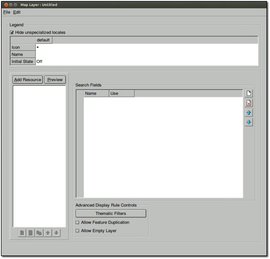
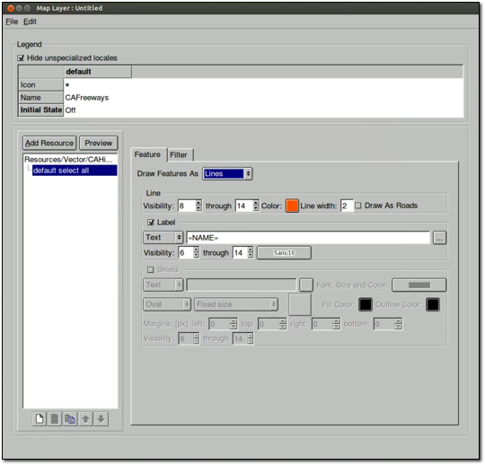
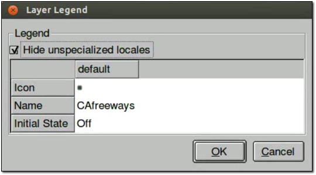
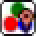
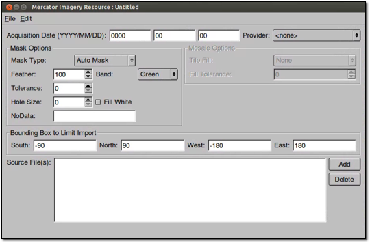
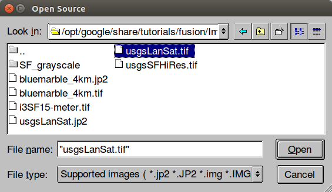
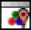
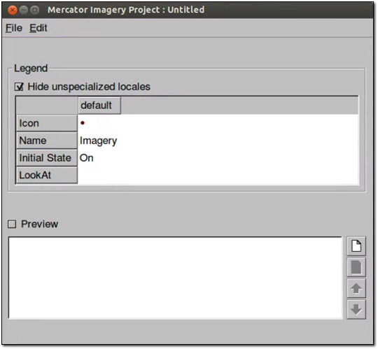
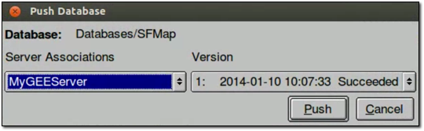
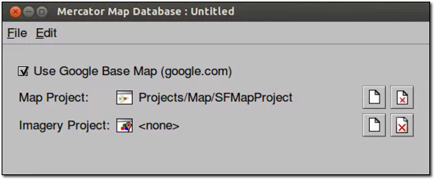

Google Earth Enterprise Documentation Home | Fusion tutorial
Creating a Map Database
In addition to using Google Earth Enterprise Fusion to prepare and publish data in Google Earth, you can use it to prepare and publish map data in Google Maps. Map data can be published with Google Earth Enterprise Fusion using Plate Carrée (EPSG: 4326) and Mercator (EPSG: 3857) projections, and is referred to hereafter as a map layer, map project, and map database.
This lesson defines, builds, and publishes a Mercator map database and it also demonstrates how you can add an imagery project of flat or Plate Carrée-based imagery resources. When you publish the Mercator map database, the flat imagery is then projected as Mercator on the Fly. This feature converts a Plate Carrée-based imagery resource into a Mercator-based imagery resource when you define your Mercator map database. When hosted on GEE Server, the server requests the Mercator on the Fly imagery resource in the database and serves it with a Mercator projection.
The option to project Mercator on the Fly enables you to re-use existing flat imagery resources for all your database types, including Mercator map databases, thereby saving you the task of creating and storing Mercator imagery resources. For more information, see Add flat imagery to Mercator map databases.
The first step in preparing any data for publication is to import the source data as Google Earth Enterprise Fusion resources. You can use one of the vector resources you defined in Defining and Building Resources for Google Maps.
After you define your vector resources, you must define and build at least one map layer for each map project. The first exercise in this lesson, Define a Map Layer, describes how to do so.
The remaining steps are similar to defining, building, pushing, and publishing other databases that you have also created for viewing in Google Earth EC.
- Define a Map Layer
- Define a Map Project
- Define a Flat Imagery Project
- Define, Push, and Publish a Map Database
- View Your Map Database
- Using the Google Base Map
Define a Map Layer
Defining a map layer consists of adding resources to the layer and defining the display rules and filters for the layer. This is similar to the process of defining display rules and filters for a vector project destined for Google Earth EC.
To define a map layer:
- Select Asset Manager from the Tools menu. The Asset Manager appears.
- Select Mercator Map Tools (2D) from the drop-down menu.
- Click . The Map Layer Editor appears.

The legend area displays the current value of each property you can set for the map layer. The top row lists the names of the locales you support. When you first open this dialog for a new map layer, only the default locale and its values appear, and the box next to Hide unspecialized locales is checked. Google Maps uses the default locale settings when you do not specify different settings for a user’s locale in this tab.
- Set the property values for the default locale as follows:
- Click the icon in the Icon field, select places3_new, and click OK. This is the icon that appears next to the name of the map layer in the Layers panel of Google Maps.
- Click in the Name field, and enter CAfreeways, and press Enter to save the change. This is the text label that appears in the Layers panel of Google Maps.
- For Initial State, accept the default setting, Off. This setting determines whether the map layer is turned on or off in Google Maps.
- Click Add Resource.
- Navigate to the
ASSET_ROOT/Resources/Vectorfolder. - Select CAHighways, and click Open. The CAHighways resource appears on the resource list.
- Select default select all under the resource name.
The Feature and Filter tabs appear on the right. The first option on the Feature tab is Draw Features As. This option allows you to specify the display rules for the selected resource. The value you set for Draw Features As determines the options available for you to specify.
In this lesson, you define display rules for label only.
- For Draw Features As, select Lines. The Lines options appear.
- Under Line, accept the default visibility range for the lines, 8 and 14.
- For Color, set it to orange.
- For Line Width, accept the default, 2.
- Check the box next to Label.
- Under Label, accept the default setting on the drop-down list, Text.
- Click . The Label Format dialog appears.
The Insert Field drop-down list contains the names of all fields in your source data.
- Select NAME, and click OK.
In the source file for the selected resource, the Name column lists the names of the roads, so when you select the Name field here, it results in the names of the roads appearing in Google Maps.
- For the label, change the visibility range to 10 through 14.
The visibility range refers to the zoom level at which your labels are visible in Google Maps.
- The default text style is black on white in the Sans 12 font. Click the text
style button (labeled Sans/12) to specify a different text style for
the labels.
The Text Style dialog appears.
- For Size, change the value to 10, and accept the default setting for Color, black.
Note: In version 3.0 and beyond, only one font and style is provided, Sans regular. However, you can create a configuration file in which you can specify additional fonts, if desired. Refer to the Administration Guide for details.
A preview of the label appears in the Preview box.
- Drag the preview over any button on the left. The new style is stored on that button. The button name reflects the font face and size of the style, and it appears with the selected color and outline attributes.
After you save a style to a button, you can simply click that button to automatically select its text style settings for another label in the future.
- Click OK. You return to the Map Layer Editor, and the Feature tab shows all of your
selections.

- Select Save from the File menu.
- Navigate to the
ASSET_ROOT/MapLayersfolder. - In the Name field, enter SFMapLayer, and click Save. The new map layer name appears in the Asset Manager’s asset list.
Define a Map Project
The first step in defining a map project is to specify which map layers to include and give the project a name. Before you define a map project, however, add a subfolder to the asset navigation tree in the Asset Manager in which you can store your map projects.
To add a subfolder for map projects:
- Select Asset Manager from the Tools menu. The Asset Manager appears.
- Right-click Projects in the asset navigation tree, and select New Subfolder. The New Subfolder dialog appears.
- Enter Map in the Folder Name field, and click OK. The new Map subfolder appears under Projects in the asset navigation tree.
To create a map project:
- In the Asset Manager, click . The Map Project Editor appears.
- Click
 . The Open dialog appears.
. The Open dialog appears. - Navigate to the
ASSET_ROOT/MapLayersfolder. - Select SFMapLayer, the map layer you created in the previous exercise, and click Open. SF Map Layer appears in the Map Project Editor.
The default legend name of the map layer, CAFreeways, appears in the Legend Name column, followed by <DEFAULT>, which indicates that this is the name you specified for the legend when you created the layer. The name and path of the map layer appears in the Layer column.
- Double-click CAFreeways. The Layer Legend dialog displays the current values for the map layer.

- Double-click the name field, change the name to California Freeways, press Enter to save the change, and click OK.
The new legend name appears in the Map Project Editor. Notice that <DEFAULT> no longer appears after the legend name. (If you want to return to the default name, right-click California Freeways in the Legend Name field, and select Use Layer Defaults from the context menu.)
- Select File > Save.
- Navigate to the
ASSET_ROOT/Projects/Mapfolder. - In the Name field, enter SFMapProject, and click Save. The new map project name appears in the Asset Manager’s asset list.
Define a Flat Imagery Project
The maps layer includes Google Maps layers and uses the Google Maps API from google.com. Map databases use either Plate Carrée (EPSG: 4326) or Mercator (EPSG: 3857) projections and normally require corresponding imagery resource types. In this lesson you add a flat imagery project from a previous tutorial lesson to a Mercator map database, which can then be projected as Mercator on the Fly. For more information, see Add flat imagery to Mercator map databases.
- Select Asset Manager from the Tools menu. The Asset Manager appears.
- Select Mercator Map Tools (2D). The tools for Mercator maps appear in the toolbar.
- Click . The Mercator Imagery Resource Editor appears with no resources selected.
 - Click Add
The Open Source dialog opens to the/opt/google/share/tutorials/fusion/Imageryfolder.
 - Select source file usgsLanSat.tif, and click Open.
- Enter today's date for Acquisition Date
- Select USGS Imagery for Provider
- Enter 2 for Tolerance
- Select File > Save and navigate to the
/ASSET_ROOT/Resources/Imageryfolder. - Enter the name SFBayAreaLanSat_Merc, and click Save.
- Select File > Close
- Repeat steps 3 through 11 for the table that follows:
Name
(Resources/Imagery/...)Acquisition Date Provider Mask Source file BlueMarble_Merc Today's date NASA Imagery No Mask
bluemarble_4km.tifi3_15Meter_Merc Today's date i3 Auto Mask
Default values.i3SF15-meter.tifSFHighResInset_Merc Today's date USGS Imagery Auto Mask
Default values.usgsSFHiRes.tif - Click . The Mercator Imagery Project Editor appears with no resources selected.
 - Click . The Open dialog appears.
- Select SFBayAreaLanSat_Merc, and click Open.
- Repeat steps 14 and 15 for Named entries in the above table.
- Select File > Save and navigate to the
/ASSET_ROOT/Projects/Imageryfolder. - Enter the name SFBayAreaMercator, and click Save.
Define, Push, and Publish a Map Database
- Select Asset Manager from the Tools menu. The Asset Manager appears.
- Select Mercator Map Tools (2D). The tools for Mercator maps appear in the toolbar.
- Click
 . The Map Database Editor appears with no projects selected.
. The Map Database Editor appears with no projects selected.

- Click next to Map Project. The Open Asset dialog appears.
- Navigate to the
ASSET_ROOT/Projects/Mapfolder. - Select SFMapProject, and click Open. The SF Map Project appears in the Map Database Editor next to Map Project.
- Click next to Imagery Project. The Open Asset dialog appears.
- Navigate to the
ASSET_ROOT/Projects/Imageryfolder.Notice that Type is set to Mercator Imagery Project and only the Mercator imagery project(s) you have built are listed.
- Select SFBayAreaMercator, and click Open. The SF Bay Area Mercator imagery project appears in the Map Database Editor next to Imagery Project.
Both map and Mercator imagery projects appear on the list.
- Select File > Save.
- Navigate to the
ASSET_ROOT/Databasesfolder. - In the Name field, enter SFMapDatabase, and click Save.
In the Asset Manager, the new map database appears, along with the other databases you have created. Notice that the Category column distinguishes between the Google Earth databases and the Google Maps database.
- Right-click SFMapDatabase, and select Build from the context
menu. The status of the database immediately changes to Waiting or Queued and then to In Progress.
Note: It might take a while to build the map database, because it is also building the project, since you did not build it.
When Google Earth Enterprise Fusion finishes building the database, its Current State column in the Asset Manager changes to Succeeded, and its Current Version column changes to the date and time the most recent build was started.
Push a Map Database to Google Earth Enterprise Server
To push a map database:
- Right-click the name of the map database you built in the previous exercise, and select Push from the context menu. The Push Database dialog appears.

- Click Push.
Google Earth Enterprise Fusion pushes the database to the Google Earth Enterprise Server, and displays a success message when it is done.
Note: If you get an error message, contact your Google Earth Enterprise Server administrator for help, or check the Google Earth Enterprise Administration Guide for more information.
Publish a Map Database on Google Earth Enterprise Server
To publish a database:
- Access the Google Earth Enterprise Server Admin console in a browser window by going to myserver.mydomainname/admin, replacing myserver and mydomainname with your server and domain.
- Sign in with the default credentials or the username and password assigned to you:
- Default username: geapacheuser
- Default password:geeadmin
Note: If you do not know your username and password, contact your Google Earth Enterprise Server System Administrator.
- Click Databases to display the list of databases pushed to the Server.
- Check the box next to the map database you want to publish. The Publish button on the Databases page appears.
- Click Publish. The Publish dialog appears.
- Specify a Publish point where the database will be accessible from. For example, if you specify MySFMap, it will be accessible from myserver.mydomainname/MySFMap.
To learn more about the options available in the Publish dialog, see Create Search Tabs, Snippet profiles, and WMS.
- Click Publish. The Databases page updates to indicate the published status of your database.
View Your Map Database
After you publish your map database, you can view it from Google Earth Enterprise Server or in any browser.
To view your map database from Google Earth Enterprise Server:
- Log in to the Admin console of Google Earth Enterprise Server.
The Admin console opens to the Databases page.
- Check the box next to the map database that you want to view.
- Click Preview.
A new browser tab opens displaying your map database.
To view your map database in any browser:
- Launch any web browser.
- Point your browser to:
http://myserver.mydomainname/publish_point
where myserver.mydomainname is the host name or IP address of your server to which you published the map database, and publish_point is the publish point that you specified when the published the map database. For example:
http://my_host_name/MySFMap
If you are not sure which server you published to, contact your Google Earth Enterprise Server administrator for help.
Google Maps displays your database.
Using the Google Base Map
When you build a map database, you have the option to use the Google Base Map. Enabling this feature connects to www.google.com, loads Google base map tiles through the Google Maps Javascript API V3, and renders your map layers on top of them.
Note: As per Google's terms of service, you may need to purchase a Maps for Business license if you are deploying your application in an internal environment.
Deploying the Google Base Map involves adding it when you build your map database.
To build your map database to include the Google Base Map:
- Select Asset Manager from the Tools menu. The Asset Manager appears.
- Select Mercator Map Tools (2D). The tools for Mercator maps appear in the toolbar.
- Click . The Map Database Editor appears with no projects selected.

- Select the Use Google Base Map (google.com) checkbox.
- Add your map project.
The map project appears in the Map Database Editor next to Map Project.
- Optionally add an imagery project. This is useful for overlaying high-resolution imagery insets on the Google Base Map.
Your map database is saved to the location you specified.